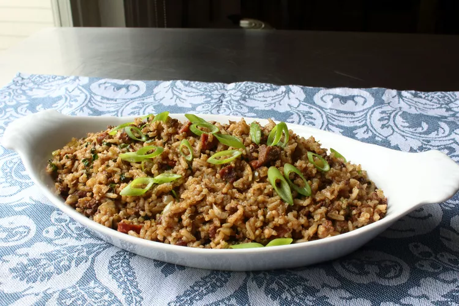

Dirty, Dirty Rice

Description
Learn how to make dirty rice even dirtier with this recipe. Believe it or not, the first place I ever had dirty rice was at Popeyes. I'd never been a huge fan of liver, but after trying dirty rice, I started to crave it with even more "dirt" (liver, pork, and aromatic vegetables). While the traditional method cooks the rice first before "soiling" it, here we add all the "filth" at the beginning and cook it into the rice.
Ingredients
- 1 tablespoon vegetable oil
- 6 ounces boneless pork shoulder, diced
- 1 yellow onion, diced
- ½ cup diced celery
- ½ cup diced green bell pepper
- 1 tablespoon paprika
- 2 teaspoons ground cumin
- 2 teaspoons freshly ground black pepper
- ½ teaspoon cayenne pepper
- ½ teaspoon garlic powder
- ¼ teaspoon dried oregano
- ¼ teaspoon dried thyme
- 1 andouille sausage, diced, or to taste
- 2 cups long-grain rice
- 8 ounces chicken livers, minced
- 4 cups chicken broth
- 2 teaspoons kosher salt, or to taste
- 1 large bay leaf
- 1 dash Worcestershire sauce
- ¼ cup sliced green onions
- ¼ cup chopped Italian parsley
Steps
- Heat oil in a high-sided pan over medium-high heat. Add pork; cook and stir until well browned and fat is rendered, 5 to 7 minutes. Add onion, celery, and bell pepper; sauté until translucent, about 5 minutes. Stir in paprika, cumin, black pepper, cayenne, garlic powder, oregano, and thyme. Cook, stirring occasionally, as vegetables continue to soften, about 5 minutes.
- Reduce the heat to medium and add andouille sausage; cook and stir to release some flavor, 2 to 3 minutes. Stir in rice and chicken livers until well coated. Add broth and salt; bring to a simmer over medium-high heat. Add bay leaf and Worcestershire sauce, cover tightly, and reduce the heat to medium-low. Cook, without stirring, until most of the liquid is absorbed and rice is starting to get tender, about 25 minutes.
- Add green onions and parsley; mix well. Cover and continue cooking over low to medium-low heat until rice is tender, about 10 minutes. Taste for seasoning and discard bay leaf before serving.